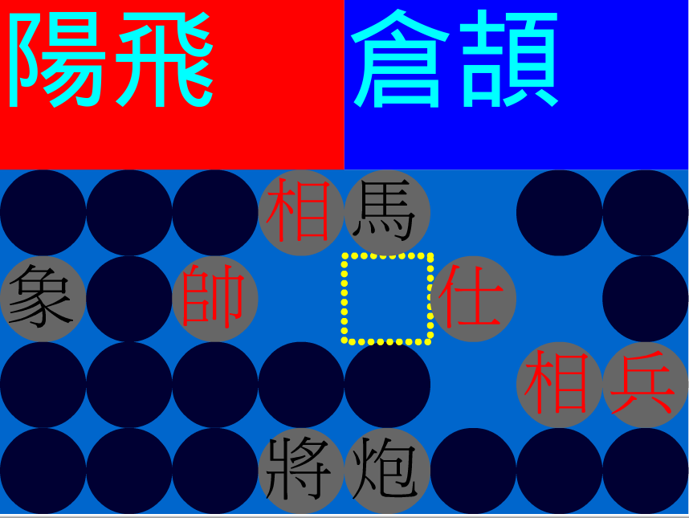

简化字版本，由libreoffice进行转简
歡迎來訪！本頁面的內容是我的個人簡介。我目前在找工作，期望職位是php程序員。
如果合適，請在中午12點至1點或晚上6點之後與我聯繫。
個人信息
| 姓名 | 陽飛 | 性別 | 男 | 年齡 | 27 |
|---|---|---|---|---|---|
| 畢業院校 | 中國計量學院 | 專業 | 機械 | 學歷 | 本科(學士學位) |
|
手機：13077187537 郵箱：ejsoon@126.com |
|||||
能力清單
| 在職工作項目 | 大美藝術教育 | 中國美術學院-考前輔導中心 | 傳奇之路 | 普莉拉 | 李文教育（幼子多多） | 新苗計劃 |
|---|---|---|---|---|---|---|
| 精通html+css，快速手寫前端網頁 | ||||||
| 手機端自適應頁面 | ||||||
| js,jquery | ||||||
| 快速搭建網站後臺 | ||||||
| php,sql |
能力描述
-
快速手寫html+css+js(連結尹卂的地方)
-
主要熟練語言爲php，sql數據庫 (住房管理系統,源碼)
-
擅長純javascript編程 (在綫輸入法，源碼) (網頁文字豎排，中文計日)
- 熟悉MVC框架CodeIgniter。 (非凡學生注冊管理系統)
{kind=link}
-
長期個人項目編寫經驗，能獨立設計系統架構 (phthon-ime)
-
超過三年linux使用經驗，掌握linux系統各種命令，熟練使用vim編輯器
-
掌握lamp的創建和維謢 (倉頡編碼查詢數據庫)
-
長期使用git版本控制系統（github.com/ejsoonyang）
-
英文閱讀能力較好，一般用英文進行編程問題的搜索
-
熱衷傳統文化，可順利閱讀古文和臺版書籍
-
喜歡鑽研，數學愛好者，益智遊戲業餘設計師
以往個人項目
 住房管理系統
住房管理系統該系統實現對整個社區的樓層、房間、床位的管理
永久保存人員信息，並對人員信息數據進行分析和管理。
語言：php5, mysql, html+css, javascript, json
開發時間：兩個月
代碼開源地址：這裡
演示地址：這裡 (請用用戶名「陽飛」登入，密碼123456)
說明書pdf下載：這裡
 雅虎奇摩在綫輸入法
雅虎奇摩在綫輸入法一個真正完全跨平臺和界面的網頁倉頡在綫輸入法
並附有編碼查詢功能，可以切換輸入模式，標點模式以及兩種顯示字體
語言：html+css, javascript
開發時間：一週
陸續維護至今：一年
代碼開源地址：這裡
演示地址：這裡
 翻的中國象棋
這是一款趣味小遊戲，有三種規則可以選擇
語言：flash action script
開發時間：半個月
演示地址：這裡
python-ime
一個用在linux gnome桌面下的簡易輸入法小程式
適合(雅虎奇摩)倉頡的高級用戶。
語言：python
開發時間：一個月(包括從python新手開始的學習用時)
維護時間：兩年
代碼開源地址：這裡
小仙並擊
該軟件是我編程的入門級作品
其實現了一般速錄軟件應具有的功能，對當時的速錄界形成了劇烈的衝擊。
語言：ahk
運行平臺：windows
維護時間：兩年
軟件下載：請在網上搜索
訂單管理系統(畢業設計)
該系統配合「大規模定制」的生產模式
以客戶訂單爲嚮導，對生產、運輸、銷售、庫存等進行調控
此系統通過了我的本科畢業設計論文答辨。
語言：VB, sql_server_2000
運行平臺：windows